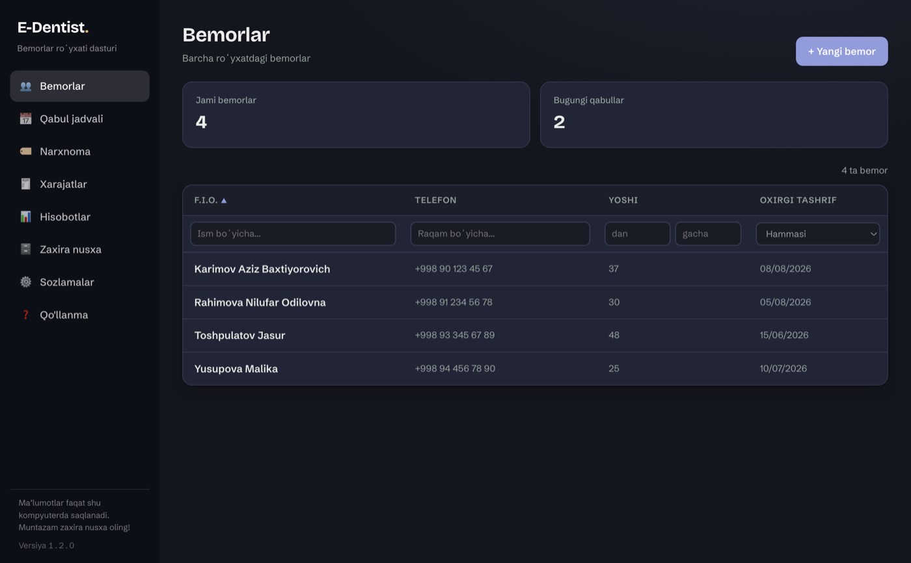
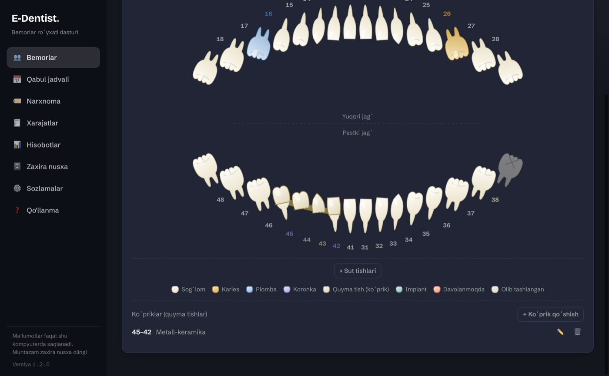
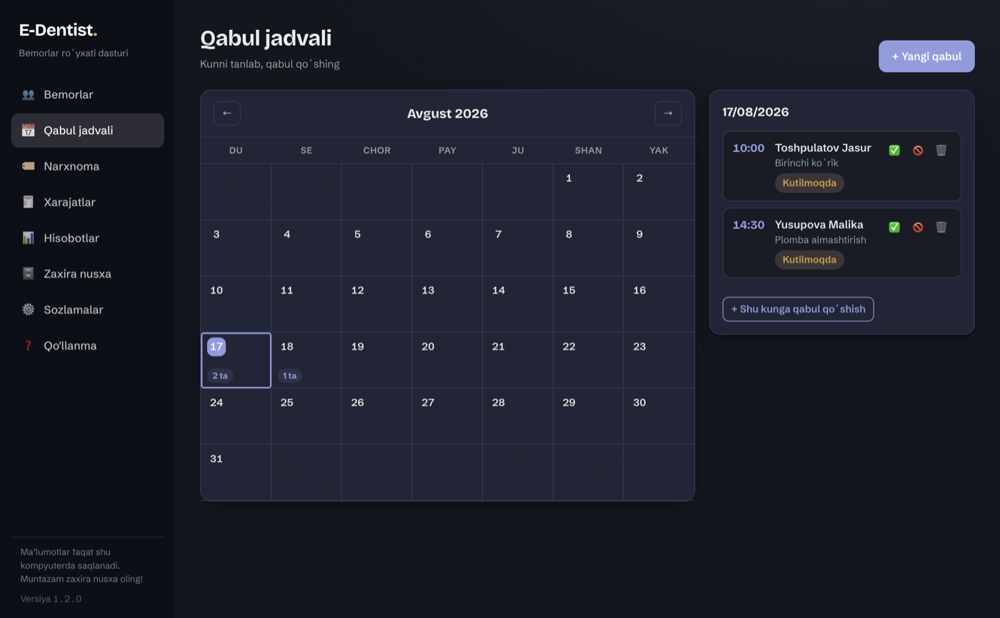
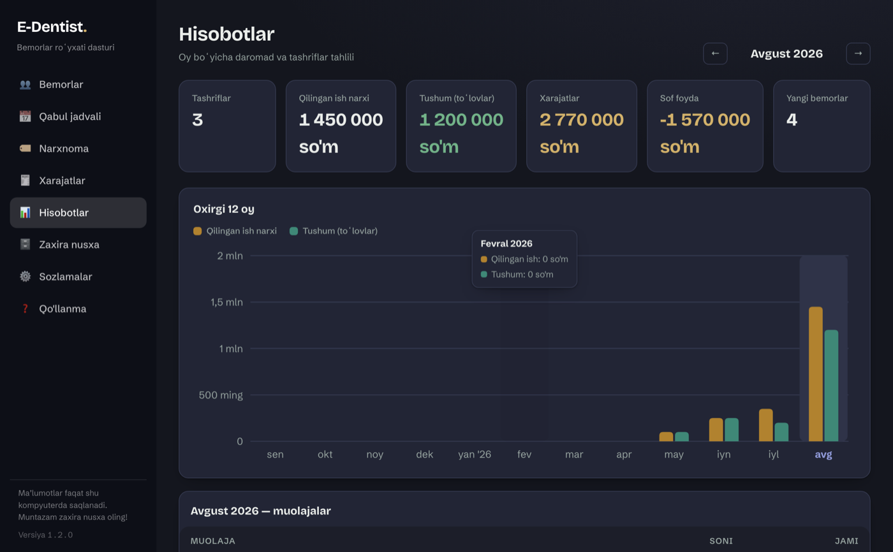

Stomatolog uchun dastur
Bemorlar kartotekasi internetsiz ishlaydi.
Tashriflar, tish xaritasi, toʻlovlar va qabul jadvali — bitta dasturda. Maʼlumot faqat sizning kompyuteringizda saqlanadi.
Versiya 1.2.0 · Windows, macOS va Android · 14 kun bepul
Holatni tanlang va tishni bosing — dasturdagidek ishlaydi.
Kundalik ishning hammasi bir joyda
Daftar va Excel oʻrniga — bemorni ochib, oʻsha yerda hamma tarixini koʻrasiz.
Bemorlar va tashriflar
Ism, telefon, yoshi va manzil boʻyicha qidirasiz; har bir bemorda tashriflar tarixi, toʻlovlari va rentgen rasmlari turadi.
- Ism yoki telefon boʻyicha bir zumda qidiruv
- Narxnomadan tanlab tashrif qoʻshish
- Rentgen va boshqa rasmlarni biriktirish

Tish xaritasi
Xalqaro FDI raqamlashida odontogramma. Tishni bosasiz — holatini, koronka materialini va izohni yozasiz.
- Karies, plomba, koronka, implant, olib tashlangan
- Koronka materiali: keramika, metall-keramika, sirkoniy, metall
- Koʻprik (quyma tish) — tayanch va oraliq tishlar bilan
- Bolalar uchun alohida sut tishlari xaritasi

Qabul jadvali
Oylik kalendarda kim qachon kelishi koʻrinadi. Dastur ochilganda bugungi va ertangi qabullarni oʻzi eslatadi.
- Kun boʻyicha qabullar roʻyxati
- Keldi / kelmadi belgisi
- Ochilishdagi eslatma oynasi

Hisobot va xarajatlar
Oylik daromad, tushum va xarajatlar bir sahifada. Qaysi muolaja koʻp daromad keltirgani ham koʻrinadi.
- Oylik daromad va sof foyda
- Klinika xarajatlari boʻyicha yozuvlar
- Eng koʻp bajarilgan muolajalar

Bemor maʼlumoti sizda qoladi
Bemor maʼlumotlari hech qanday serverga yuborilmaydi. Roʻyxatdan oʻtish, elektron pochta va parol talab qilinmaydi — dastur faqat bir marta faollashtiriladi.
Qulf va barmoq izi
Dastur ochilishida parol soʻraydi, belgilangan vaqtdan keyin oʻzi qulflanadi. Telefonda barmoq izi yoki Face ID bilan ochiladi.
Summalar koʻrinmaydi
Narx va qarz ustunlari sukut boʻyicha ekranda umuman chizilmaydi — bemor yoningizda oʻtirganda ham xotirjam ishlaysiz.
Xarajat va hisobot qulfi
Pulga oid boʻlimlar alohida parol soʻraydi. Parolni unutsangiz, tiklash kodi bilan yangisini qoʻyasiz.
Zaxira nusxa
Butun baza va rasmlar bitta zip faylga chiqadi. Kuniga bir marta avtomatik zaxira ham olinadi.
Avval sinab koʻrasiz, keyin qaror qilasiz
Dasturni oʻrnatib, 14 kun toʻliq ishlatib koʻrasiz. Yoqmasa — hech narsa toʻlamaysiz.
1 · 14 kun bepul
Oʻrnatasiz, bitta tugmani bosasiz — tamom. Karta raqami, roʻyxatdan oʻtish yoki elektron pochta soʻralmaydi. Barcha imkoniyatlar ochiq, hech biri cheklanmagan.
2 · Kod bilan davom etish
Sinov yoqsa, bizga yozasiz va faollashtirish kodini olasiz. Kodni kiritasiz — ish joyidan davom etadi. Sinov davomida kiritgan bemorlaringiz joyida qoladi.
3 · Internetsiz ishlaydi
Internet faqat faollashtirishda kerak. Undan keyin dastur 60 kungacha butunlay internetsiz ishlayveradi — klinikada aloqa uzilsa ham ish toʻxtamaydi.
4 · 1 kompyuter + 2 telefon
Bitta litsenziya klinikadagi kompyuter va ikkita telefonni qamrab oladi. Kompyuteringizni almashtirsangiz — yozing, yangi qurilmaga oʻtkazib beramiz.
Yuklab olish
Versiya 1.2.0. Yuklab olib oʻrnatganingizdan keyin 14 kun bepul ishlatasiz. Kompyuter va telefon versiyalari alohida ishlaydi — maʼlumot ular orasida zaxira zip orqali koʻchiriladi.
- Faylni oching va oʻrnatishni tasdiqlang.
- Windows ogohlantirsa: «Batafsil» → «Baribir ishga tushirish».
- .dmg ni oching va dasturni Programs papkasiga torting.
- Birinchi ochishda: oʻng tugma → «Open».
- Faylni telefonda oching.
- «Nomaʼlum manbadan oʻrnatish» ruxsatini yoqing.
- Oʻrnatishni tasdiqlang.
- Eski ilovada «Zaxira nusxa» → eksport qiling va zip faylni saqlang.
- Eski ilovani oʻchirib tashlang.
- Yangi APK ni oʻrnating.
- Zaxira zipni import qiling.
Tez-tez soʻraladigan savollar
Maʼlumotlar internetga yuboriladimi?
Yoʻq. Bemor maʼlumotlari — ismlar, tashriflar, rasmlar, summalar — hech qayerga yuborilmaydi. Hammasi shu kompyuterdagi bitta baza faylida qoladi.
Internet faqat bir joyda kerak: dasturni birinchi marta faollashtirishda. Undan keyin kundalik ishda internet talab qilinmaydi — dastur 60 kungacha butunlay internetsiz ishlayveradi va faqat litsenziya muddatini yangilash uchun qisqa aloqa qiladi.
Kompyuter buzilsa maʼlumot yoʻqoladimi?
Shuning uchun zaxira nusxa bor: butun baza va rasmlar bitta zip faylga chiqadi. Uni flashka yoki boshqa kompyuterda saqlang — yangi kompyuterga oʻsha zipni import qilsangiz, hamma narsa joyiga tushadi.
Telefon va kompyuter maʼlumoti birlashadimi?
Yoʻq, ular mustaqil ishlaydi. Maʼlumotni koʻchirish uchun bir tomonda zaxira zip chiqarib, ikkinchi tomonda import qilasiz.
Nechta qurilmada ishlata olaman?
Bitta litsenziya 1 ta kompyuter va 2 ta telefonga beriladi — odatda klinika uchun shuncha yetadi. Kerak boʻlsa qoʻshimcha qurilma qoʻshsak boʻladi, yozing.
Bazalar baribir alohida boʻladi: bir xil maʼlumot kerak boʻlsa, zaxira zip orqali koʻchirasiz.
Sinov tugasa bemorlarim oʻchadimi?
Yoʻq. Barcha maʼlumotlaringiz kompyuteringizda joyida qoladi. Kod kiritganingizdan keyin ish toʻxtagan joyidan davom etadi — hech narsani qaytadan kiritish kerak emas.
Toʻlaganimdan keyin nima qilishim kerak?
Hech narsa. Biz muddatni uzaytiramiz, dastur oʻzi yangilab oladi — siz hatto sezmaysiz ham. Kod faqat yangi qurilma qoʻshganda kerak boʻladi.
Parolni unutsam nima boʻladi?
Parol oʻrnatilganda dastur bir marta tiklash kodini koʻrsatadi — uni qogʻozga yozib qoʻying. Qulf ekranidagi «Parolni unutdingizmi?» orqali shu kod bilan yangi parol qoʻyasiz.
Eski Windows kompyuterda ishlaydimi?
Windows 10 va 11 da ishlaydi. Alohida kuchli kompyuter talab qilinmaydi — dastur bazani oʻz ichida yuritadi.
Savolingiz qoldimi?
Oʻrnatishda, faollashtirishda yoki ishlatishda qiyinchilik boʻlsa — Telegramda yozing. Botga yozasiz, javobni jonli odam beradi.